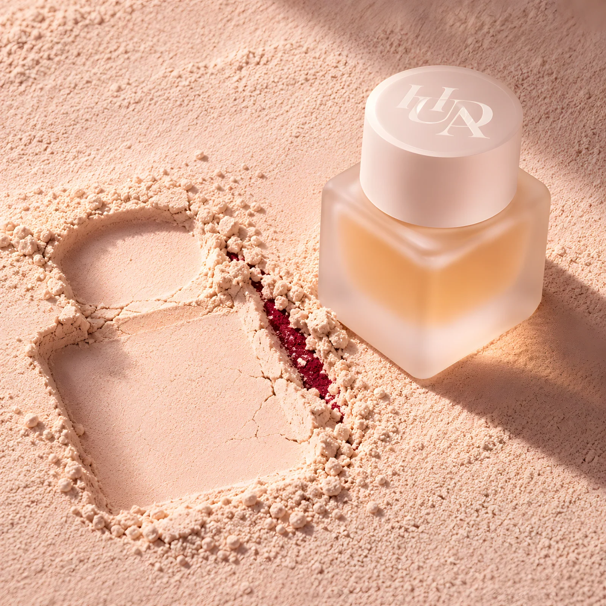
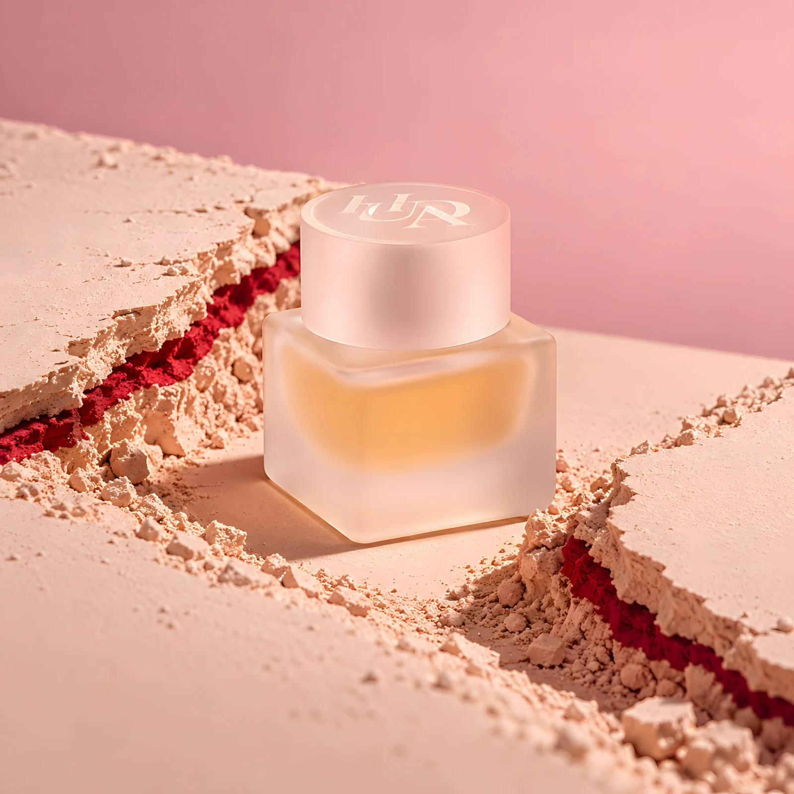
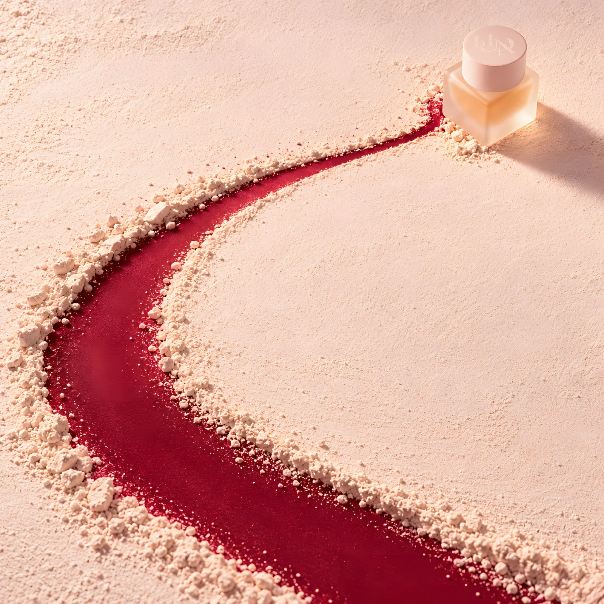
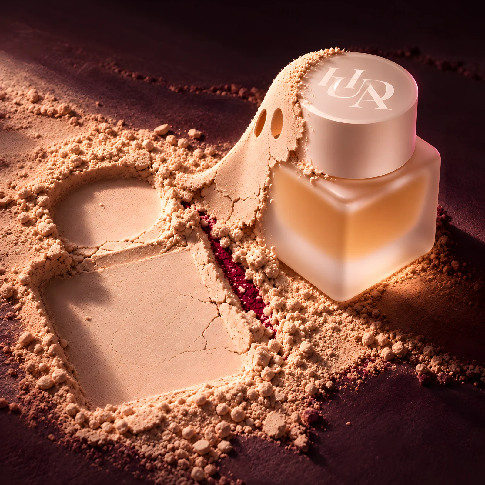
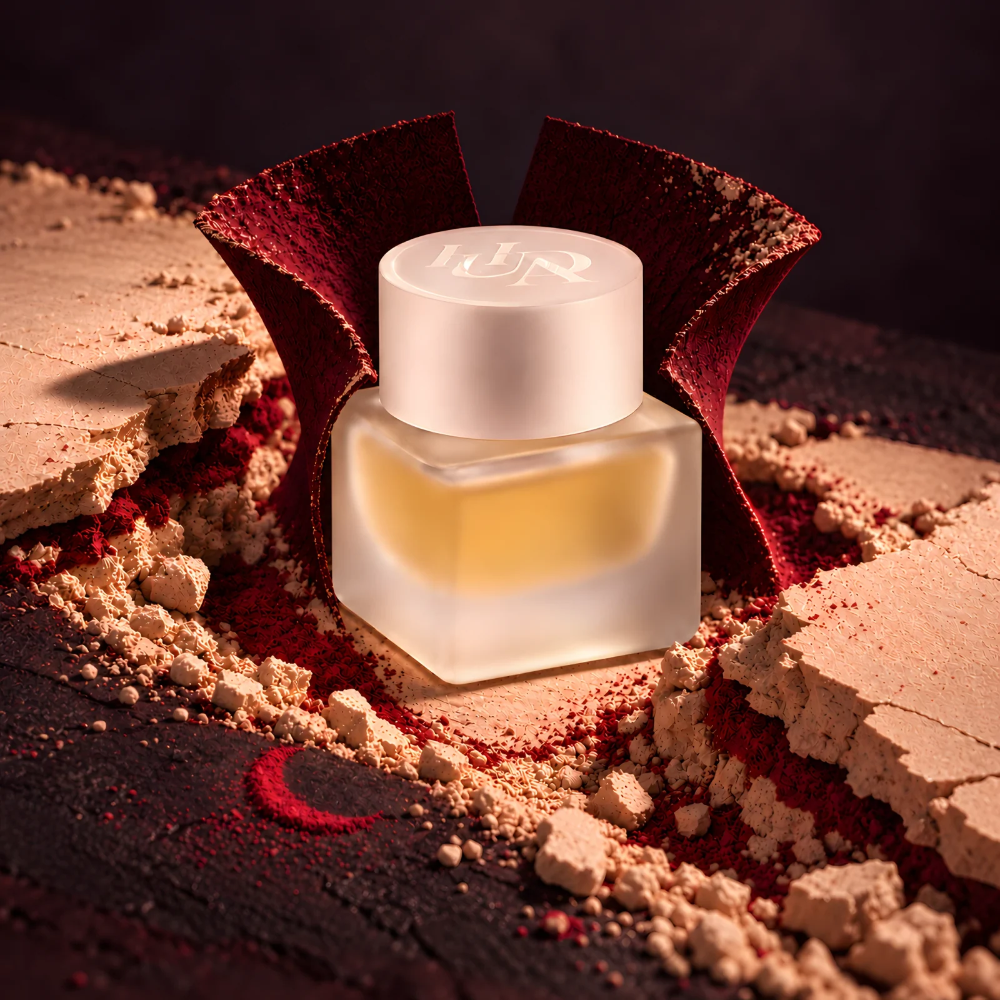
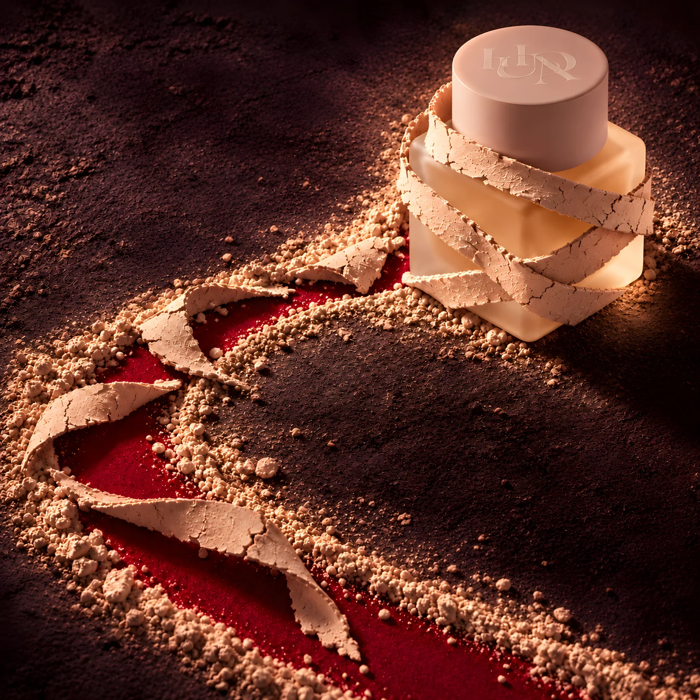

THE VEIL BREAKS
HUDA Beauty Easy Bake Intense leaves its impression in powder, then dresses for the dark.

The idea
Easy Bake begins with the physical language of pressed powder. Three studies move from the bottle’s impression to a broken surface and its afterimage. A Halloween companion series turns that same powder into a ghost, a cherry-dark collar and brittle mummy wrappings. The six images share one material logic while the light and mood shift from soft blush to cinematic plum.
Making the world
Powder grain, fractured edges, cherry pigment and controlled product light keep the bottle central in both chapters. These are self-initiated AI-assisted concept images, enhanced from smaller generations to 4096-pixel square masters. The HUDA cap mark is generatively reconstructed, so packaging micro-details require an approved product asset before commercial use.
The series




